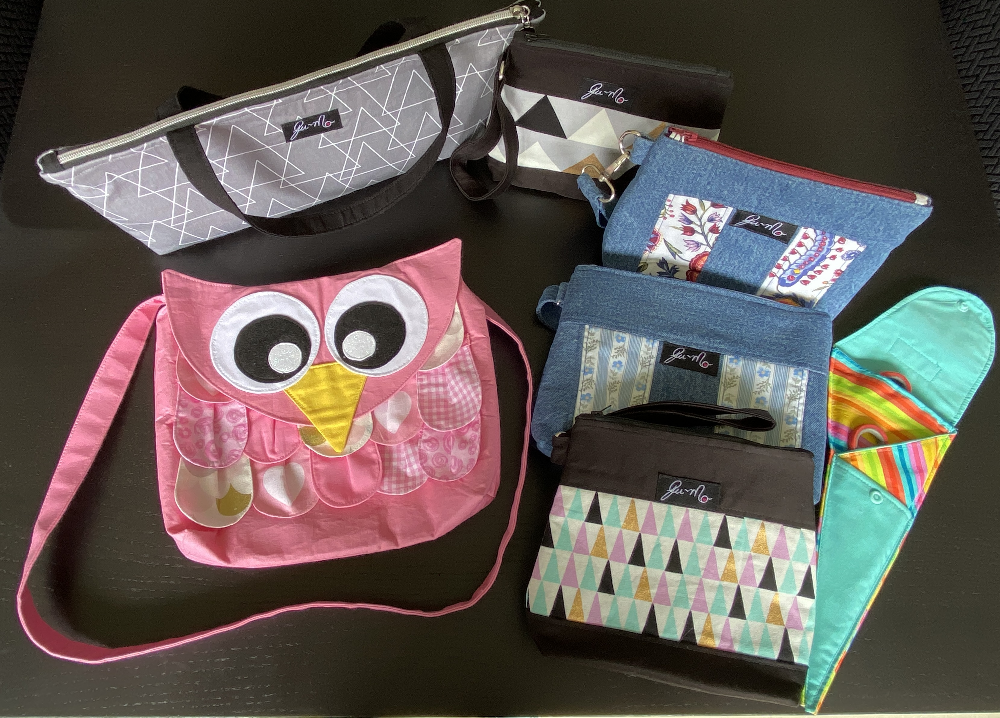
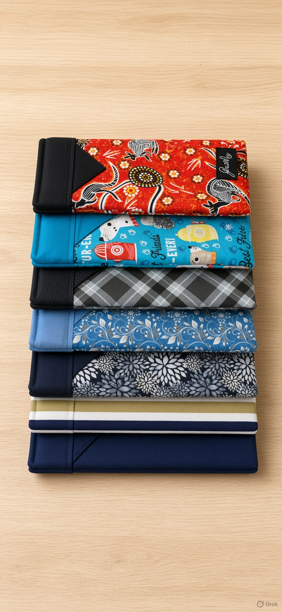
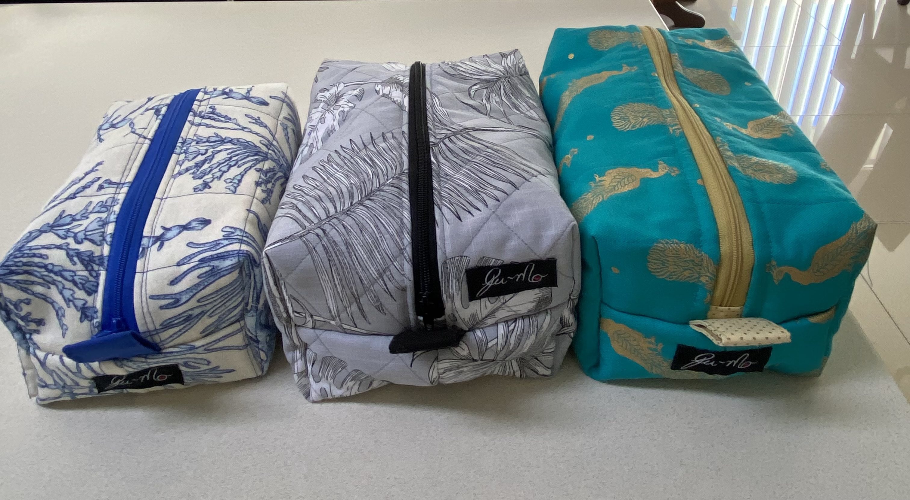
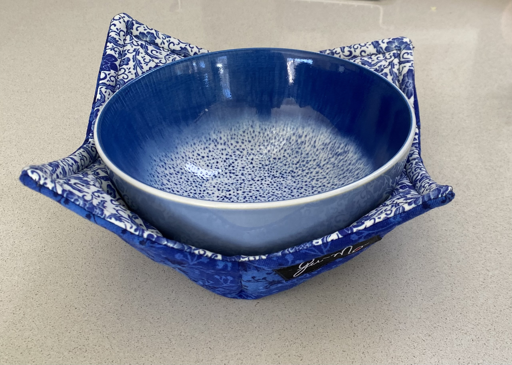
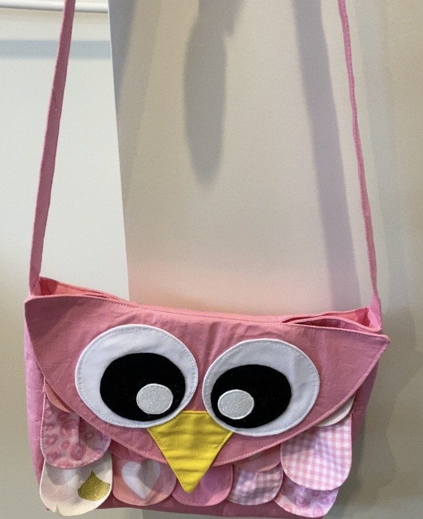
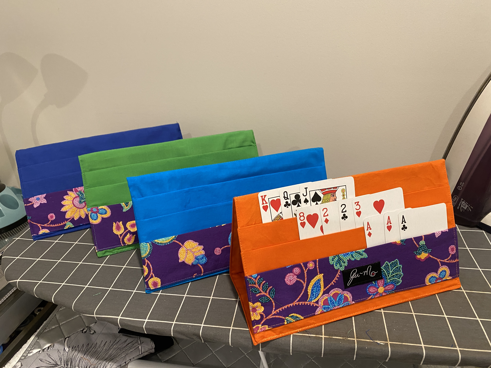
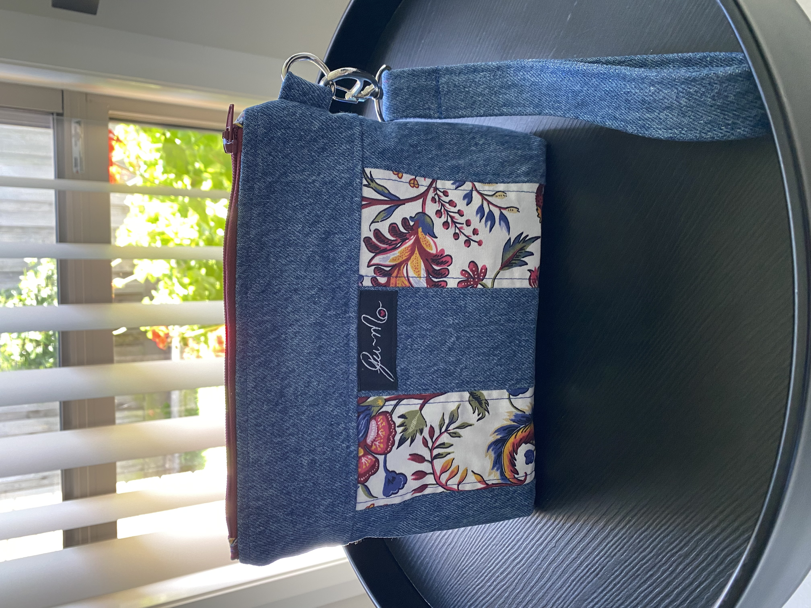
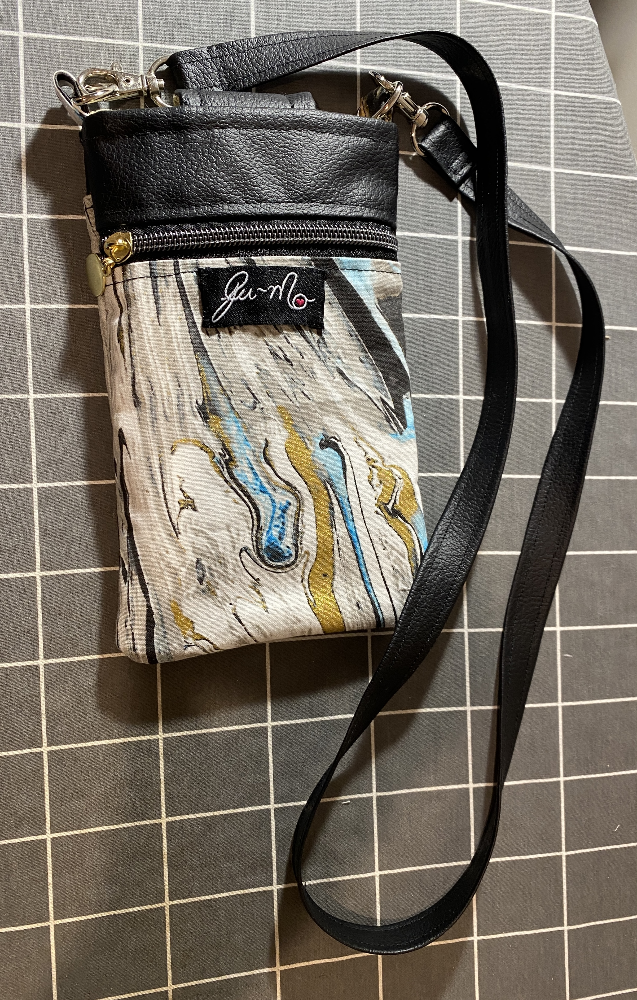
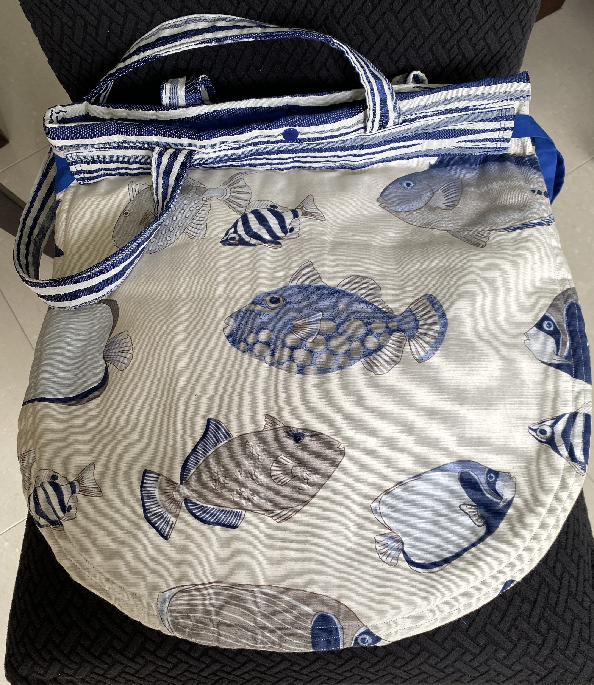
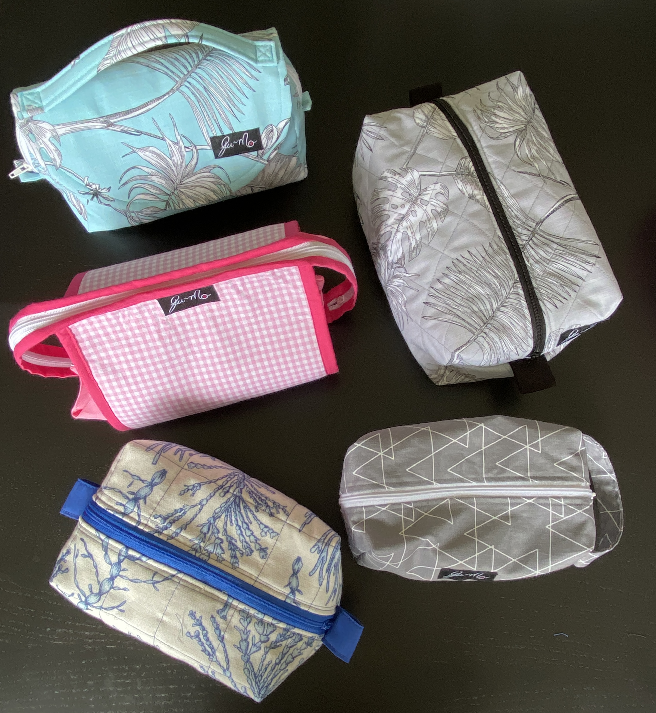

Handmade Pouches, Bags, Bowl Cosies & More
Made with care by Julie Moreland
Discover the Collection
Every Ju-Mo piece is carefully handmade by Julie Moreland. From glasses and sunglasses pouches to bowl cosies, card holders, bags and more — each item is made with love and attention to detail.
Using beautiful fabrics and quality construction, Julie creates practical, stylish accessories that bring a little joy to everyday life.
Perfect for yourself or as a thoughtful gift. Many designs available — get in touch to see what’s currently in stock!
Handmade pouches, bags, bowl cosies, card holders & more

Handmade fabric pouches and holders to keep your glasses and sunglasses safe and stylish. Many fun patterns available.

Perfect for glasses, sunglasses, makeup or everyday essentials. Many prints available.

Keep your hands safe and your bowls stylish. Microwave-safe fabric holders in beautiful patterns.

Fun and functional bags including the popular owl design and other styles.

Handy organizers for playing cards or other small items. Practical and pretty.

Convenient wrist straps on stylish pouches — great for days out.

Stylish wristlet pouches with secure zip and comfortable strap. Perfect for carrying essentials hands-free.

Roomy and fun beach bags with playful prints. Perfect for days by the water or everyday use.

Floral, geometric, nature prints and more. Each piece is unique and handmade with care.
Ready to order or have a question? Julie would love to hear from you.